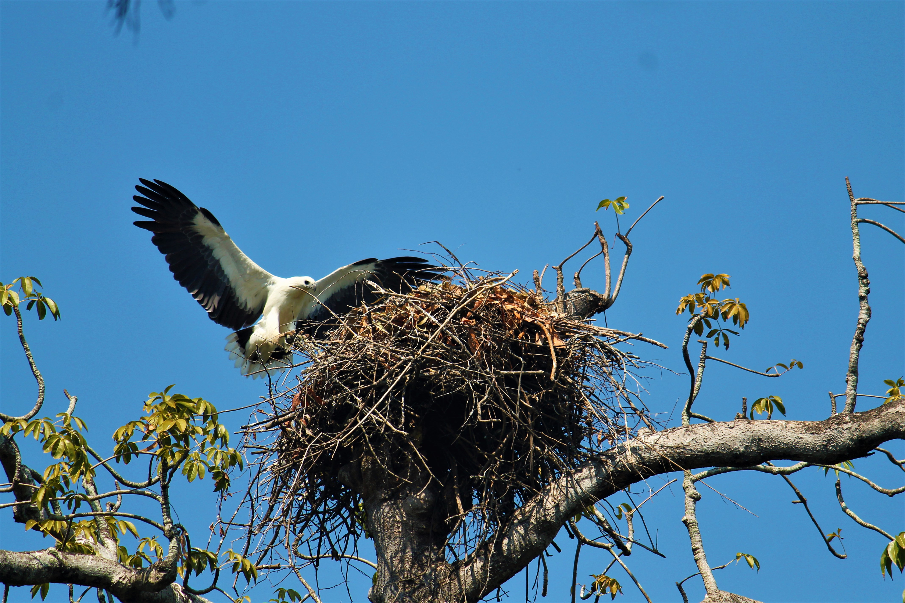
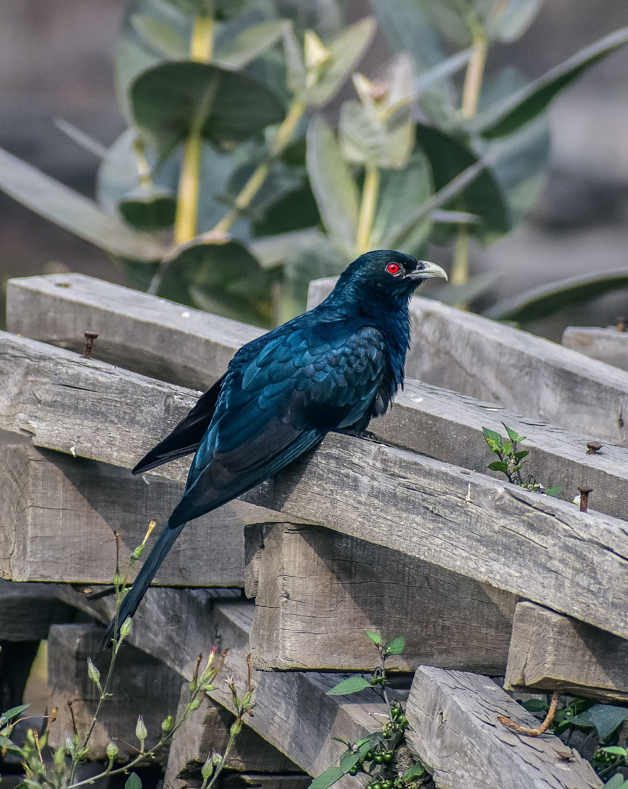
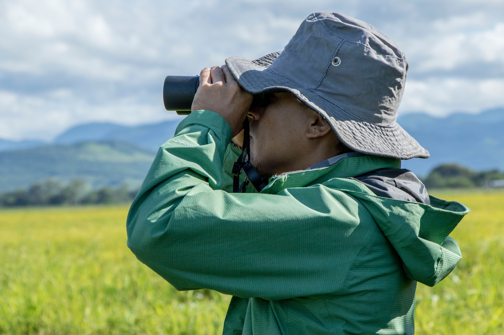

Bird behaviour.
Better questions.
Explore what birds do, why they move, and how field observations become scientific evidence.
Start Introduction→
From the fascinating behaviours of familiar birds to the scientific approaches we use to investigate their causes and consequences.

The story behind the science
Meet the koel, explore brood parasitism, and discover how watching birds becomes scientific inquiry.
Open introduction ↗
Behaviour & Migration
Behavioural questions, ethograms, migration patterns and why birds migrate.
Open presentation ↗
Fieldwork & Methods
Turn research questions into observations, sampling plans and field methods.
View outline ↗Research Design & Data
Build a research question and consider replication, bias and interpretation.
View outline ↗Explore the science of birds.
The workshop brings together behavioural ecology, migration biology and field research methods. Each section combines scientific concepts with examples that connect observations of birds to testable research questions.
Presentations are organised as a guided learning sequence, from natural-history observations to study design, data collection and interpretation.